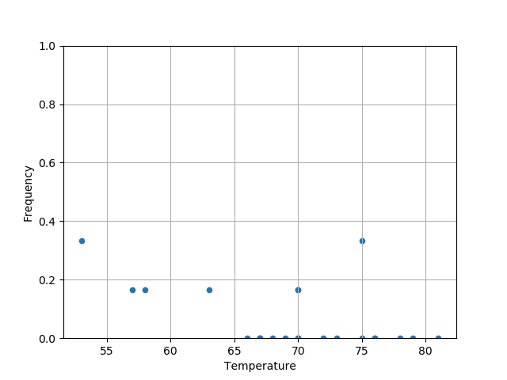
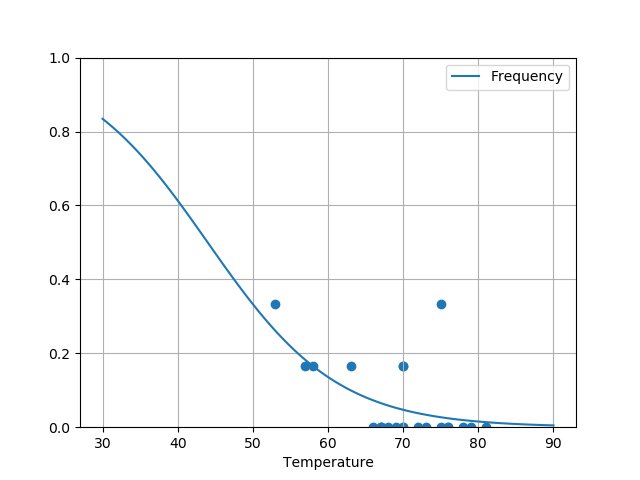

Analysis of the risk of failure of the O-rings on the Challenger shuttle
Table of Contents
On January 27, 1986, the day before the takeoff of the shuttle Challenger, a three-hour teleconference was held between Morton Thiokol (the manufacturer of one of the engines) and NASA. The discussion focused on the consequences of the temperature at take-off of 31°F (just below 0°C) for the success of the flight and in particular on the performance of the O-rings used in the engines. Indeed, no test had been performed at this temperature.
The following study takes up some of the analyses carried out that night with the objective of assessing the potential influence of the temperature and pressure to which the O-rings are subjected on their probability of malfunction. Our starting point is the results of the experiments carried out by NASA engineers during the six years preceding the launch of the shuttle Challenger.
1 Loading the data
We start by loading this data:
import numpy as np import pandas as pd data = pd.read_csv("shuttle.csv") data
Date Count Temperature Pressure Malfunction
0 4/12/81 6 66 50 0
1 11/12/81 6 70 50 1
2 3/22/82 6 69 50 0
3 11/11/82 6 68 50 0
4 4/04/83 6 67 50 0
5 6/18/82 6 72 50 0
6 8/30/83 6 73 100 0
7 11/28/83 6 70 100 0
8 2/03/84 6 57 200 1
9 4/06/84 6 63 200 1
10 8/30/84 6 70 200 1
11 10/05/84 6 78 200 0
12 11/08/84 6 67 200 0
13 1/24/85 6 53 200 2
14 4/12/85 6 67 200 0
15 4/29/85 6 75 200 0
16 6/17/85 6 70 200 0
17 7/2903/85 6 81 200 0
18 8/27/85 6 76 200 0
19 10/03/85 6 79 200 0
20 10/30/85 6 75 200 2
21 11/26/85 6 76 200 0
22 1/12/86 6 58 200 1
The data set shows us the date of each test, the number of O-rings (there are 6 on the main launcher), the temperature (in Fahrenheit) and pressure (in psi), and finally the number of identified malfunctions.
2 Graphical inspection
Flights without incidents do not provide any information on the influence of temperature or pressure on malfunction. We thus focus on the experiments in which at least one O-ring was defective. Excluding all non-defective experiments was a mistake.
undata = data[data.Malfunction > 0] undata
Date Count Temperature Pressure Malfunction
1 11/12/81 6 70 50 1
8 2/03/84 6 57 200 1
9 4/06/84 6 63 200 1
10 8/30/84 6 70 200 1
13 1/24/85 6 53 200 2
20 10/30/85 6 75 200 2
22 1/12/86 6 58 200 1
We have a high temperature variability but the pressure is almost always 200, which should simplify the analysis.
How does the frequency of failure vary with temperature?
import matplotlib.pyplot as plt plt.clf() data["Frequency"] = data.Malfunction / data.Count data.plot(x="Temperature", y="Frequency", kind='scatter', ylim=[0,1]) plt.grid(True) plt.savefig(matplot_lib_filename) print(matplot_lib_filename)

At first glance, the dependence does not look very important, but let's try to estimate the impact of temperature \(t\) on the probability of O-ring malfunction.
3 Estimation of the temperature influence
Suppose that each of the six O-rings is damaged with the same probability and independently of the others and that this probability depends only on the temperature. If \(p(t)\) is this probability, the number \(D\) of malfunctioning O-rings during a flight at temperature \(t\) follows a binomial law with parameters \(n=6\) and \(p=p(t)\). To link \(p(t)\) to \(t\), we will therefore perform a logistic regression.
import statsmodels.api as sm data['Intercept'] = 1 logmodel = sm.GLM(data['Frequency'], data[['Intercept','Temperature']], family=sm.families.Binomial(sm.families.links.logit)).fit() logmodel.summary()
Generalized Linear Model Regression Results
==============================================================================
Dep. Variable: Frequency No. Observations: 23
Model: GLM Df Residuals: 21
Model Family: Binomial Df Model: 1
Link Function: logit Scale: 1.0000
Method: IRLS Log-Likelihood: -3.9210
Date: Thu, 30 May 2019 Deviance: 3.0144
Time: 00:21:42 Pearson chi2: 5.00
No. Iterations: 6 Covariance Type: nonrobust
===============================================================================
coef std err z P>|z| [0.025 0.975]
-------------------------------------------------------------------------------
Intercept 5.0850 7.477 0.680 0.496 -9.570 19.740
Temperature -0.1156 0.115 -1.004 0.316 -0.341 0.110
===============================================================================
The most likely estimator of the temperature parameter is 0.0014 and the standard error of this estimator is 0.122, in other words we cannot distinguish any particular impact and we must take our estimates with caution.
4 Estimation of the probability of O-ring malfunction
The expected temperature on the take-off day is 31°F. Let's try toestimate the probability of O-ring malfunction at this temperature from the model we just built:
import matplotlib.pyplot as plt data_pred = pd.DataFrame({"Temperature": np.linspace(start=30, stop=90, num=121), "Intercept": 1}) data_pred["Frequency"] = logmodel.predict(data_pred[["Intercept", "Temperature"]]) data_pred.plot(x="Temperature", y="Frequency", kind='line', ylim=[0,1]) plt.scatter(x=data["Temperature"], y=data["Frequency"]) plt.grid(True) plt.savefig(matplot_lib_filename) print(matplot_lib_filename)

As expected from the initial data, the temperature has no significant impact on the probability of failure of the O-rings. It will be about 0.2, as in the tests where we had a failure of at least one joint. When the whole dataset is considered, it is clear that the model predicts a higher chance of failure at lower temperatures. Let's get back to the initial dataset to estimate the probability of failure:
data = pd.read_csv("shuttle.csv") np.sum(data.Malfunction) / np.sum(data.Count)
0.06521739130434782
This probability is thus about \(p=0.065\). Knowing that there is a primary and a secondary O-ring on each of the three parts of the launcher, the probability of failure of both joints of a launcher is \(p^2 \approx 0.00425\). The probability of failure of any one of the launchers is \(1-(1-p^2)^3 \approx 1.2%\).
Thus, everything is under control, so the takeoff can happen tomorrow as planned. But the next day, the Challenger shuttle exploded and took away with her the seven crew members. The public was shocked and in the subsequent investigation, the reliability of the O-rings was questioned. Beyond the internal communication problems of NASA, which have a lot to do with this fiasco, the previous analysis includes (at least) a small problem… Can you find it? You are free to modify this analysis and to look at this dataset from all angles in order to to explain what's wrong. See bold lines explaining the problems in the analysis.